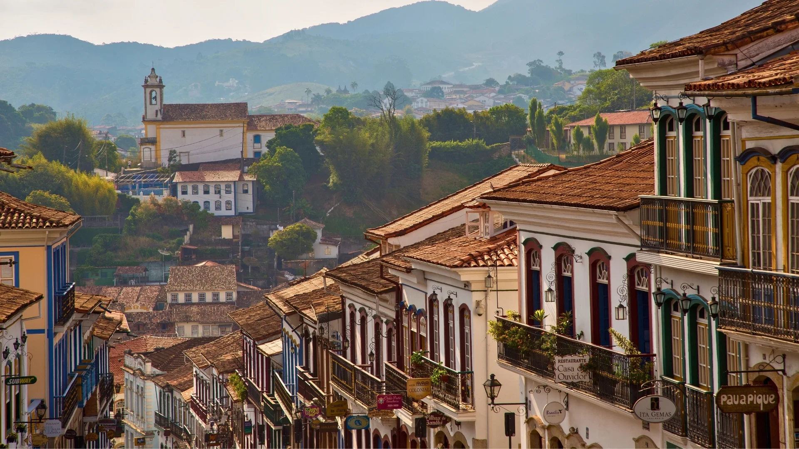
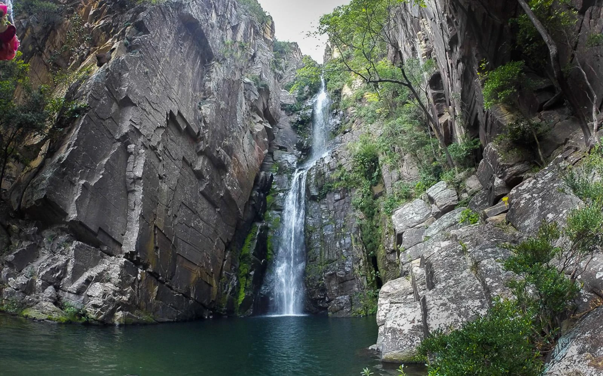
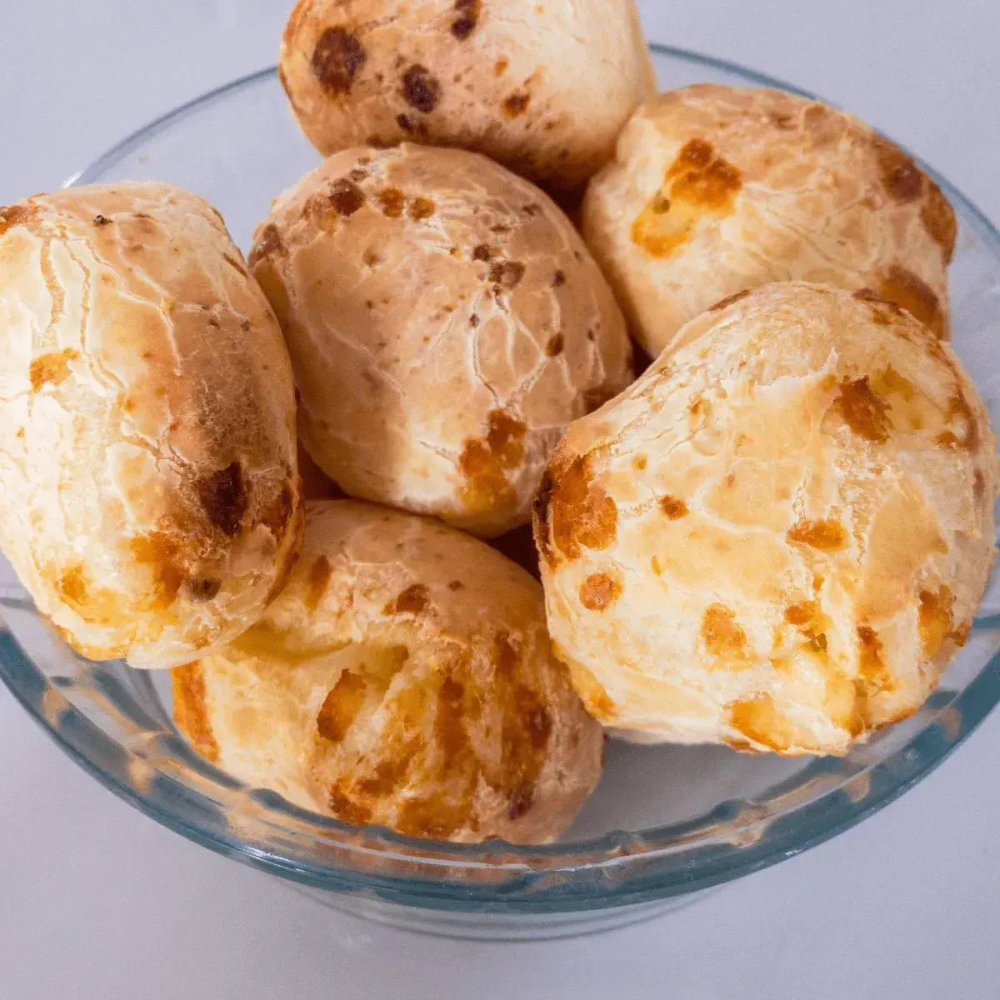
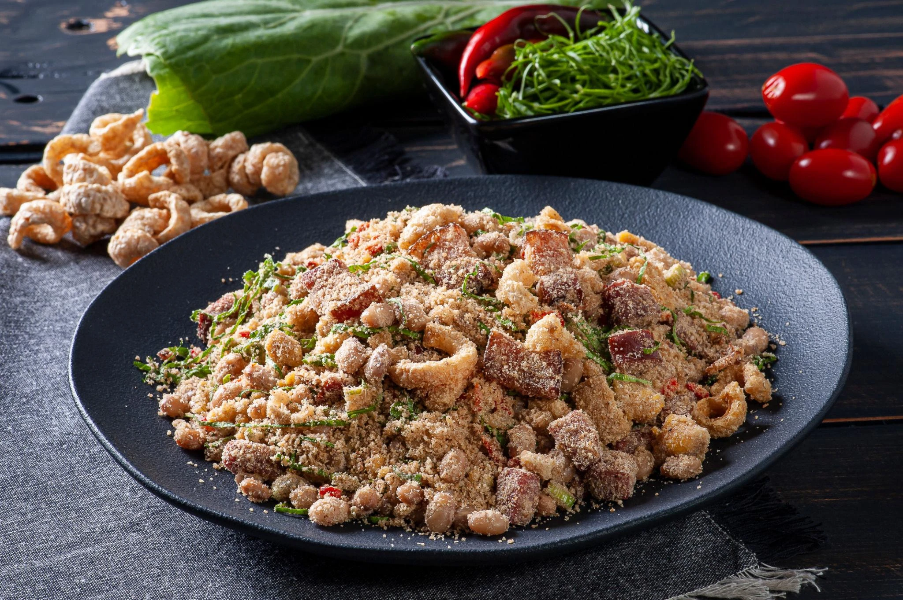
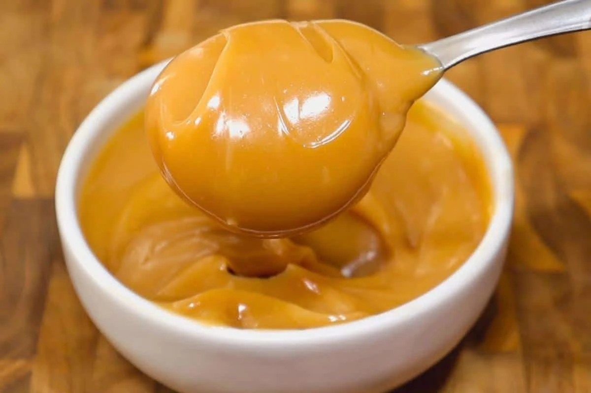

Capital
Belo Horizonte
Conheça destinos, culturas, sabores e paisagens de todas as regiões
brasileiras.
Destinos, culturas e paisagens
incríveis te esperam.
Minas Gerais é um dos estados mais importantes do Brasil, conhecido por sua rica história ligada ao ciclo do ouro, cidades coloniais preservadas, belas paisagens montanhosas e uma das gastronomias mais famosas do país. O estado reúne patrimônio histórico, cultura, natureza e hospitalidade.

Belo Horizonte
Aproximadamente 586.528 km²
Cerca de 21 milhões de habitantes
Sudeste

Um dos maiores museus a céu aberto do mundo, combinando arte contemporânea, jardins botânicos e paisagens naturais impressionantes.

Cidade histórica reconhecida pela arquitetura colonial, igrejas barrocas e importância durante o ciclo do ouro.

Destino famoso por cachoeiras, trilhas, cânions e rica biodiversidade do cerrado brasileiro.

Símbolo da culinária mineira, é preparado com polvilho e queijo, resultando em um salgado macio por dentro e crocante por fora.

Prato tradicional preparado com feijão, farinha, ovos, linguiça e temperos variados.

Uma das sobremesas mais famosas do estado, produzida a partir da cocção lenta do leite com açúcar.
Predomina o clima tropical de altitude, com temperaturas agradáveis durante boa parte do ano. O período seco, entre maio e setembro, costuma ser ideal para turismo.
Predomina o clima tropical de altitude, com temperaturas agradáveis durante boa parte do ano. O período seco, entre maio e setembro, costuma ser ideal para turismo.
A região histórica de Ouro Preto, Mariana e Tiradentes é excelente para quem gosta de cultura e história. Já a Serra do Cipó e o Sul de Minas são ótimas opções para ecoturismo e contato com a natureza.
A região histórica de Ouro Preto, Mariana e Tiradentes é excelente para quem gosta de cultura e história. Já a Serra do Cipó e o Sul de Minas são ótimas opções para ecoturismo e contato com a natureza.
A culinária mineira é considerada uma das mais tradicionais do Brasil, destacando-se pelos queijos, doces, pratos preparados no fogão a lenha e pela hospitalidade típica do povo mineiro.
A culinária mineira é considerada uma das mais tradicionais do Brasil, destacando-se pelos queijos, doces, pratos preparados no fogão a lenha e pela hospitalidade típica do povo mineiro.